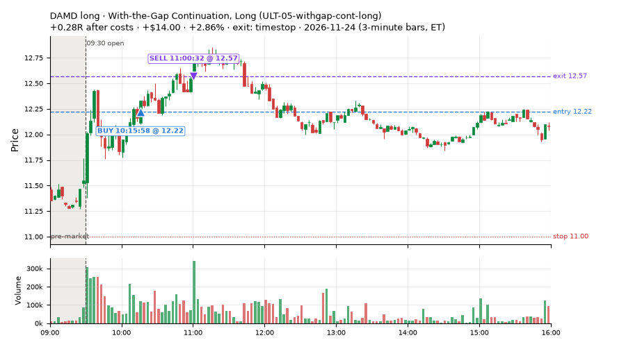
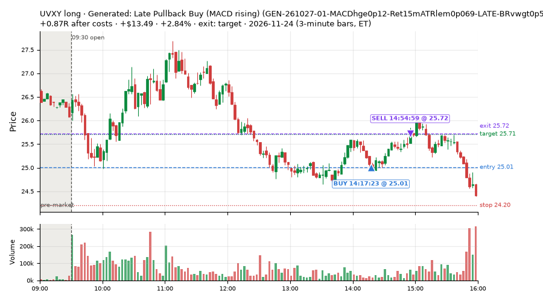
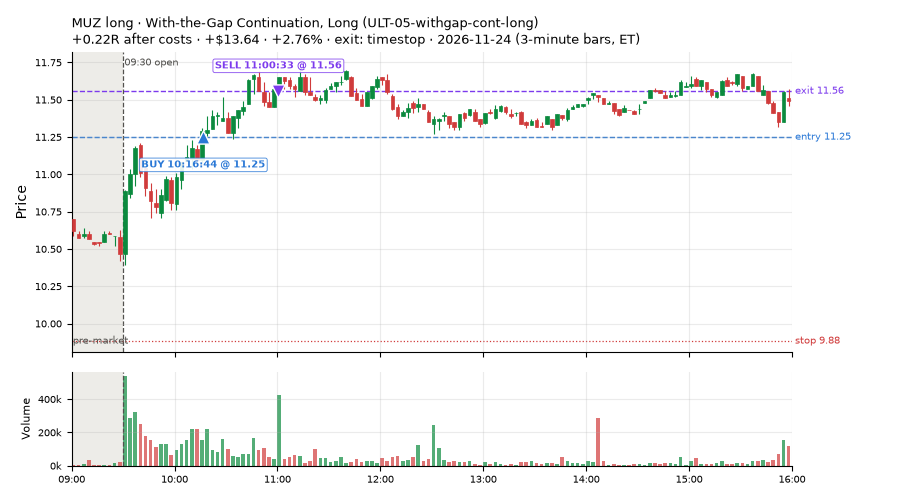
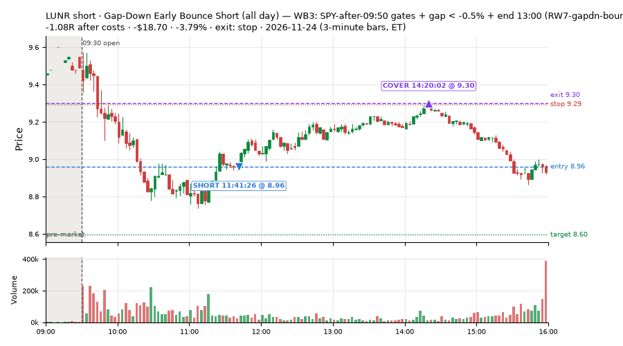
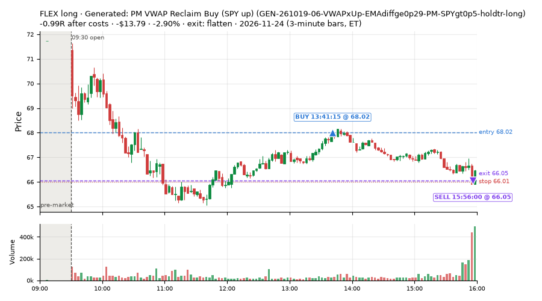
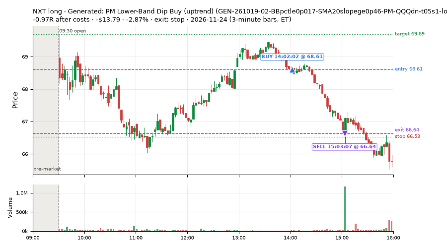
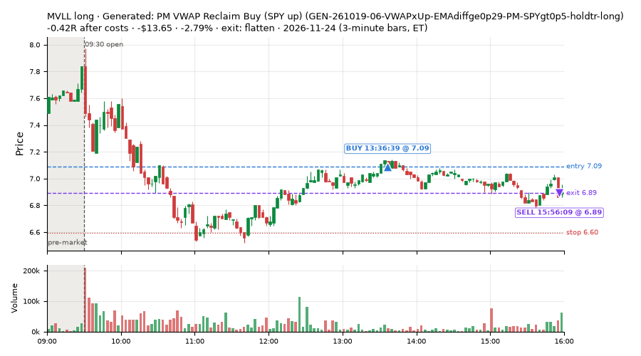
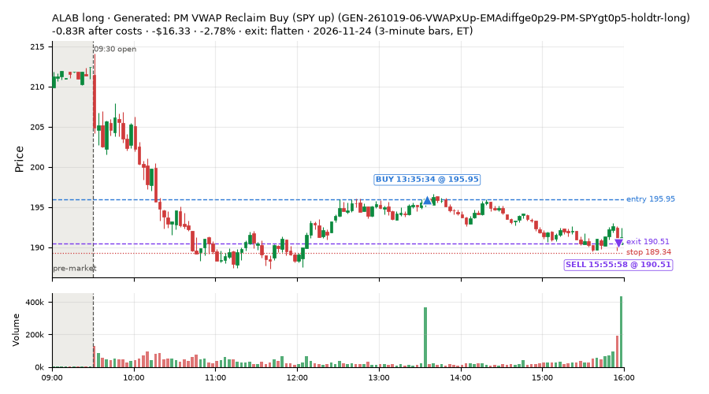

160 trades · win rate 34% · P/L $-335.98
PROBATION: no live setup has passed both locked test periods. 10 owner-directed setups added 2026-10-08 (MarcoFlow top 5 + 5 new), untested live. RW6G1 (RW6 + VWAP band guard) added 2026-10-09, probation.

| Symbol | Setup | Side | In | Out | Entry | Exit | Exit reason | % gained | P/L |
|---|---|---|---|---|---|---|---|---|---|
| DAMD | With-the-Gap Continuation, Long (ULT-05-withgap-cont-long) | long | 10:15 | 11:00 | 12.22 | 12.57 | timestop | +2.86% | $14.00 |
| UVXY | Generated: Late Pullback Buy (MACD rising) (GEN-261027-01-MACDhge0p12-Ret15mATRlem0p069-LATE-BRvwgt0p5-t05s1-long) | long | 14:17 | 14:54 | 25.01 | 25.72 | target | +2.84% | $13.49 |
| MUZ | With-the-Gap Continuation, Long (ULT-05-withgap-cont-long) | long | 10:16 | 11:00 | 11.25 | 11.56 | timestop | +2.76% | $13.64 |
| Symbol | Setup | Side | In | Out | Entry | Exit | Exit reason | % lost | P/L |
|---|---|---|---|---|---|---|---|---|---|
| LUNR | RW7-gapdn-bounce-early-short-FD-WB3 | short | 11:41 | 14:20 | 8.96 | 9.30 | stop | -3.79% | $-18.70 |
| FLEX | GEN-261019-06-VWAPxUp-EMAdiffge0p29-PM-SPYgt0p5-holdtr-long | long | 13:41 | 15:56 | 68.02 | 66.05 | flatten | -2.90% | $-13.79 |
| NXT | GEN-261019-02-BBpctle0p017-SMA20slopege0p46-PM-QQQdn-t05s1-long | long | 14:02 | 15:03 | 68.61 | 66.64 | stop | -2.87% | $-13.79 |
| MVLL | GEN-261019-06-VWAPxUp-EMAdiffge0p29-PM-SPYgt0p5-holdtr-long | long | 13:36 | 15:56 | 7.09 | 6.89 | flatten | -2.79% | $-13.65 |
| ALAB | GEN-261019-06-VWAPxUp-EMAdiffge0p29-PM-SPYgt0p5-holdtr-long | long | 13:35 | 15:55 | 195.95 | 190.51 | flatten | -2.78% | $-16.33 |








Signal to fill: median 2s, 90th percentile 3s (160 trades). Bars close each minute; the order follows the bar close.
Best excursion (MFE): median 0.17R; worst (MAE) median 0.45R. 57% of trades never got +0.25R in our favour; 2 reached +1R and still closed at or below 0.
| Symbol | Setup | Best R | Worst R | Closed R |
|---|---|---|---|---|
| BBIO | GEN-261026-05-Ret15mATRge0p042-FromPCATRge0p28-ORHdistlem0p38-OPEN-BRopgt0p5-hold-short | +1.63 | -1.05 | -1.11 |
| BX | RW7-gapdn-bounce-early-short-FD-WB3 | +1.02 | -1.04 | -1.09 |
| ZYME | GEN-261027-07-RSI14le35-FromOpenge2-AM-BRvwlt0p5-t1s1-short | +0.58 | -1.04 | -1.14 |
| AS | RW7-gapdn-bounce-early-short-FD-WB3 | +0.60 | -1.02 | -1.08 |
| XYZ | RW7-gapdn-bounce-early-short-FD-WB3 | +0.50 | -1.06 | -1.11 |
| Entry time | Trades | Win | Avg R | P/L |
|---|---|---|---|---|
| 09:50-10:30 | 9 | 78% | +0.01 | $48.98 |
| 10:30-11:30 | 18 | 33% | -0.52 | $-37.79 |
| 11:30-13:00 | 75 | 24% | -0.27 | $-240.47 |
| 13:00-14:00 | 29 | 45% | -0.08 | $-36.60 |
| 14:00-16:00 | 29 | 38% | -0.14 | $-70.10 |
| Setup | Trades | Win | Avg R after costs | Adj R (net of SPY) | Avg R ex-market (all sessions) | P/L |
|---|---|---|---|---|---|---|
| Generated: PM Lower-Band Dip Buy (uptrend) (GEN-261019-02-BBpctle0p017-SMA20slopege0p46-PM-QQQdn-t05s1-long) | 7.0 | 71% | +0.02 | +0.01 | +0.10 (beta +0.58, n 13) | $5.17 |
| Generated: PM VWAP Reclaim Buy (SPY up) (GEN-261019-06-VWAPxUp-EMAdiffge0p29-PM-SPYgt0p5-holdtr-long) | 18.0 | 22% | -0.29 | -0.27 | -0.12 (beta +1.85, n 18) | $-89.74 |
| Generated: Lunch New-Low Short (selling) — WB1: down >= 1.3 ATR on the day (GEN-261026-03-NewLOD-Flow3lem0p37-FromOpenATRlem0p78-LUNCH-BRopgt0p5-holdtr-short-WB1) | 2.0 | 0% | -1.06 | -0.82 | – | $-20.30 |
| Generated: Open Up-Day Bounce Short (GEN-261026-05-Ret15mATRge0p042-FromPCATRge0p28-ORHdistlem0p38-OPEN-BRopgt0p5-hold-short) | 2.0 | 50% | -0.40 | -0.44 | +0.08 (beta -0.83, n 27) | $-2.77 |
| Generated: Late Pullback Buy (MACD rising) (GEN-261027-01-MACDhge0p12-Ret15mATRlem0p069-LATE-BRvwgt0p5-t05s1-long) | 4.0 | 75% | +0.46 | +0.55 | +0.20 (beta -1.20, n 21) | $22.72 |
| Generated: Morning Up-Stock Dip Short (GEN-261027-07-RSI14le35-FromOpenge2-AM-BRvwlt0p5-t1s1-short) | 9.0 | 33% | -0.41 | -0.28 | -0.37 (beta -1.30, n 47) | $-23.96 |
| Generated: Late Down-Stock Turn Buy (SPY up) (GEN-261028-01-MACDhge0p12-Since950ATRlem0p25-LATE-SPYgt0p5-holdtr-long) | 3.0 | 33% | -0.11 | -0.10 | – | $-11.23 |
| Generated: Late Gap-Down Oversold Buy (GEN-261028-04-ORBfailUp-RSI14le22-Gaplem1p2-LATE-BRvwgt0p5-holdtr-long) | 9.0 | 22% | -0.40 | -0.45 | -0.51 (beta +2.84, n 10) | $-35.76 |
| Late-Day ETF Dip Buy — WB4: more dips (refire, looser DI, falling-hour guard) (NM-ETF-late-dip-di-long-WB4) | 4.0 | 50% | +0.14 | +0.19 | +0.20 (beta +1.17, n 40) | $-10.04 |
| NS2 Up-3 Short, QQQ Up, Slope Down (near-miss) (NM-RWR4-ns2-up3-qqqup-slopedn-short) | 2.0 | 100% | +0.46 | +0.44 | – | $11.87 |
| Gap-Down Early Bounce Short (all day) — WB3: SPY-after-09:50 gates + gap < -0.5% + end 13:00 (RW7-gapdn-bounce-early-short-FD-WB3) | 50.0 | 28% | -0.43 | -0.19 | -0.16 (beta -0.63, n 151) | $-159.71 |
| With-the-Gap Continuation, Long (ULT-05-withgap-cont-long) | 11.0 | 64% | +0.13 | +0.16 | -0.05 (beta +0.09, n 326) | $52.39 |
| With-the-Gap Continuation, Short (ULT-05-withgap-cont-short) | 39.0 | 28% | -0.09 | -0.06 | -0.01 (beta -0.45, n 63) | $-74.62 |
Market direction (SPY, beta 1) accounted for $-169.18 of today's $-335.98; the rest ($-166.80) came from the setups themselves. Avg R net of SPY: -0.13 (incl. a hedge leg's cost; report only).
20 setups live today. Today: 255 signals, 160 taken, 4 lost because another setup held the symbol (2%). Since 2026-11-12 (9 sessions): 1913 signals, 969 taken, 34 lost to other setups (2%). Peak open positions today 80 of 400 slots. Earnings blackout removed 124 symbols before scanning.
Simulated playing time (not live): 944 what-if trades of signals not taken, avg -0.01R, 49% winners; of them 34 lost to another setup (avg -0.10R).
Silent: LIQ-pdl-sweep-open15-vwap-long
| Prio | Setup | Today sig / taken | Sessions | Signals / taken / trades | Taken/day | Expected/day | Lost to other setups | Lost to (setup n) | Top skip reasons | SIMULATED: not-taken n / avg R / win | Verdict |
|---|---|---|---|---|---|---|---|---|---|---|---|
| 1 | Late-Day ETF Dip Buy — WB4: more dips (refire, looser DI, falling-hour guard) NM-ETF-late-dip-di-long-WB4 | 5 / 4 | 6 | 48 / 40 / 40 | 6.67 | – | 1 | NS3-failed-vwap-reclaim-short 1 | other 4, spread / quote / size 3, symbol held by another setup 1 | 8 / +0.10R / 62% | ok 33.3 entries/week |
| 2 | Gap-Down Early Bounce Short (all day) — WB3: SPY-after-09:50 gates + gap < -0.5% + end 13:00 RW7-gapdn-bounce-early-short-FD-WB3 | 66 / 50 | 6 | 204 / 151 / 151 | 25.17 | – | 1 | GEN-261028-09-FlowShiftlem0p65-ADX7le23-AM-BRoplt0p35-t05s1-long 1 | spread / quote / size 47, not shortable / shorts off 5, symbol held by another setup 1 | 53 / -0.24R / 38% | ok 125.8 entries/week |
| 3 | Monday Weak-RS NS3 Short (near-miss) — WB3: reclaim volume >= 0.45x, from 10:05 NM-RWN5-ns3-mon-weakrs-short-WB3 | 0 / 0 | 6 | 49 / 32 / 32 | 5.33 | – | 0 | – | spread / quote / size 11, other 4, not shortable / shorts off 2 | 17 / +0.09R / 47% | ok 26.7 entries/week |
| 4 | Generated: Lunch New-Low Short (selling) — WB1: down >= 1.3 ATR on the day GEN-261026-03-NewLOD-Flow3lem0p37-FromOpenATRlem0p78-LUNCH-BRopgt0p5-holdtr-short-WB1 | 3 / 2 | 6 | 5 / 4 / 4 | 0.67 | – | 0 | – | not shortable / shorts off 1 | 1 / +1.02R / 100% | slow 3.3 entries/week; ~18 weeks to 60 trades |
| 5 | Generated: Late Down-Stock Turn Buy (SPY up) GEN-261028-01-MACDhge0p12-Since950ATRlem0p25-LATE-SPYgt0p5-holdtr-long | 6 / 3 | 3 | 6 / 3 / 3 | 1.00 | – | 1 | RW7-gapdn-bounce-early-short-FD-WB3 1 | symbol held by another setup 1, spread / quote / size 1, other 1 | 3 / -0.35R / 33% | slow 5.0 entries/week; ~12 weeks to 60 trades |
| 6 | Generated: PM VWAP Reclaim Buy (SPY up) GEN-261019-06-VWAPxUp-EMAdiffge0p29-PM-SPYgt0p5-holdtr-long | 35 / 18 | 3 | 35 / 18 / 18 | 6.00 | – | 3 | RW7-gapdn-bounce-early-short-FD-WB3 3, ULT-05-withgap-cont-short 1 | spread / quote / size 8, other 5, symbol held by another setup 3 | 17 / -0.07R / 47% | ok 30.0 entries/week |
| 7 | NS2 Up-3 Short, QQQ Up, Slope Down (near-miss) NM-RWR4-ns2-up3-qqqup-slopedn-short | 3 / 2 | 3 | 5 / 4 / 4 | 1.33 | – | 0 | – | not shortable / shorts off 1 | 1 / +0.41R / 100% | slow 6.7 entries/week; ~9 weeks to 60 trades |
| 8 | Backside VWAP-Test Short CWT04-backside-vwaptest-a15-short | 3 / 0 | 3 | 7 / 0 / 0 | 0.00 | – | 0 | – | not shortable / shorts off 4, spread / quote / size 2, other 1 | 7 / -0.40R / 29% | slow no entries yet |
| 9 | Generated: Late Gap-Down Oversold Buy GEN-261028-04-ORBfailUp-RSI14le22-Gaplem1p2-LATE-BRvwgt0p5-holdtr-long | 10 / 9 | 3 | 11 / 10 / 10 | 3.33 | – | 0 | – | spread / quote / size 1 | 1 / +0.94R / 100% | ok 16.7 entries/week |
| 10 | Big Gainer Fade with VWAP Band Guard RW6G1-ns2-up3-vwap2sd-short | 0 / 0 | 9 | 13 / 5 / 5 | 0.56 | 0.40 | 0 | – | not shortable / shorts off 5, spread / quote / size 2, other 1 | 8 / +0.80R / 88% | slow 2.8 entries/week; ~22 weeks to 60 trades |
| 11 | Backside Lower-High Short (big runner) CWT04-backside-lh-a25-short | 1 / 0 | 9 | 2 / 0 / 0 | 0.00 | – | 0 | – | spread / quote / size 1, other 1 | 2 / -0.09R / 50% | slow no entries yet |
| 12 | Index Dip Bounce 5 3x S&P IDX5-spy050-0945-3x-trail | 0 / 0 | 9 | 1 / 1 / 1 | 0.11 | – | 0 | – | – | 0 / – | slow 0.6 entries/week; ~108 weeks to 60 trades |
| 13 | * SPY Dip of 0.30%, Breadth Turn (SPXL, trailing) (near-miss) LD8-spy-dip030-breadthturn-spxl-holdtr-long | 0 / 0 | 9 | 2 / 2 / 2 | 0.22 | – | 0 | – | – | 0 / – | slow 1.1 entries/week; ~54 weeks to 60 trades |
| 14 | Generated: PM Lower-Band Dip Buy (uptrend) GEN-261019-02-BBpctle0p017-SMA20slopege0p46-PM-QQQdn-t05s1-long | 7 / 7 | 3 | 14 / 13 / 13 | 4.33 | – | 0 | – | spread / quote / size 1 | 1 / +0.37R / 100% | ok 21.7 entries/week |
| 15 | Generated: Late Pullback Buy (MACD rising) GEN-261027-01-MACDhge0p12-Ret15mATRlem0p069-LATE-BRvwgt0p5-t05s1-long | 9 / 4 | 9 | 49 / 21 / 21 | 2.33 | – | 0 | – | spread / quote / size 19, other 7, price through stop/target 2 | 28 / +0.14R / 71% | slow 11.7 entries/week; ~5 weeks to 60 trades |
| 16 | Generated: Open Up-Day Bounce Short GEN-261026-05-Ret15mATRge0p042-FromPCATRge0p28-ORHdistlem0p38-OPEN-BRopgt0p5-hold-short | 2 / 2 | 7 | 43 / 27 / 27 | 3.86 | – | 3 | ULT-05-withgap-cont-long 3 | spread / quote / size 9, symbol held by another setup 3, other 3 | 16 / +0.81R / 69% | ok 19.3 entries/week |
| 17 | Generated: Morning Up-Stock Dip Short GEN-261027-07-RSI14le35-FromOpenge2-AM-BRvwlt0p5-t1s1-short | 18 / 9 | 9 | 202 / 47 / 47 | 5.22 | – | 0 | – | not shortable / shorts off 91, spread / quote / size 45, other 18 | 155 / -0.16R / 44% | ok 26.1 entries/week |
| 18 | Big Loser VWAP Reclaim Fade NS3-failed-vwap-reclaim-short | 0 / 0 | 9 | 123 / 61 / 61 | 6.78 | 3.03 | 4 | ULT-05-withgap-cont-long 3, IDX5-spy050-0945-3x-trail 1 | spread / quote / size 40, not shortable / shorts off 11, other 7 | 62 / +0.13R / 56% | ok 33.9 entries/week |
| 19 | With-the-Gap Continuation, Long ULT-05-withgap-cont-long | 12 / 11 | 3 | 652 / 326 / 326 | 108.67 | – | 20 | NS3-failed-vwap-reclaim-short 15, NM-RWN5-ns3-mon-weakrs-short-WB3 11, GEN-261026-05-Ret15mATRge0p042-FromPCATRge0p28-ORHdistlem0p38-OPEN-BRopgt0p5-hold-short 10 | spread / quote / size 159, other 147, symbol held by another setup 20 | 326 / -0.02R / 44% | ok 543.3 entries/week |
| 20 | With-the-Gap Continuation, Short ULT-05-withgap-cont-short | 75 / 39 | 3 | 127 / 63 / 63 | 21.00 | – | 0 | – | spread / quote / size 48, not shortable / shorts off 16 | 64 / +0.25R / 66% | ok 105.0 entries/week |
Every trade is attached as a CSV you can open and edit in Excel or Google Sheets. Live page: https://misiti15.github.io/MCF/live/